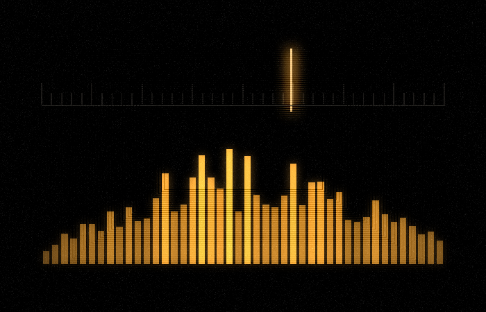
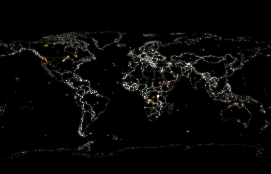
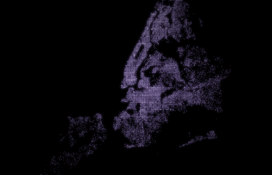
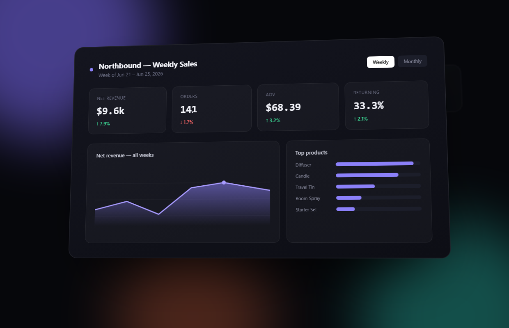

Projects
A running collection of things I've built, broken, and analyzed.

A 24/7 pirate radio station with no server and no stream — a fixed epoch and arithmetic keep every listener on the same second, and the eleven-hour jungle crate reshuffles itself every cycle. Housed in an ode to Windows Media Player: seven beat-reactive visualizations straight out of the Winamp era — feedback tunnels, kaleidoscopes, starbursts — tracker modules synthesized live in the browser, and a live wire into what I'm playing on Spotify.

A live map of everything the earth is going through right now — earthquakes, wildfires, floods, and outbreaks pulled from USGS, NASA, GDACS, and WHO feeds on every visit, alongside a hand-curated register of the ongoing crises that never make the feed.

3.3 million NYC 311 complaints rendered as an interactive map of light — no map tiles, the streets are the complaints. Density, signature, and rhythm views, live API feed, and a borough-level analysis of how long the city takes to show up.

An EfficientNetB0 model trained on the balanced FairFace dataset, probing whether equal training data produces equal accuracy across racial groups. Interactive metrics, confusion matrix, and Grad-CAM explorer.

A dual-source prospecting engine built for a commercial services operation — CMS public dataset pipeline ranked by violation severity, plus an AI agent surfacing leads from reviews and complaints. 3,356 facilities indexed across the US.

An internal analytics tool unifying e-commerce sales and field-service metrics across multiple brands — revenue, orders, retention, and visit tracking in one place. Demo rebuilt with fictional brands and sample data.